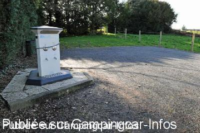
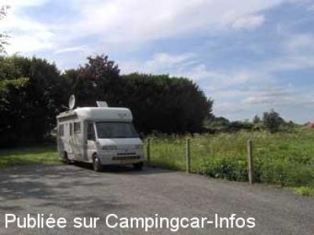

ASN = Aire de services avec stationnement nuit possible de :
CERISY LA FORÊT
(N° 174)
Accès/adresse :
Le Bourg
50680 CERISY LA FORÊT
50680 CERISY LA FORÊT
Latitude : (Nord) 49.19879° Décimaux ou 49° 11′ 55′′
Longitude : (Ouest) -0.93216° Décimaux ou 0° 55′ 55′′
Tarif : 2015
Stationnement gratuit
Eau ou électricité : 2 €
Type de borne : EURO-RELAIS
Services :


Tous commerces
Autres informations :
Ouvert toute l'année
1 emplacement
Tel +33(0)233 561 001

Le 07/04/2010 par Dominique

Le 19/02/2010 par hema06
de
Dominique
le 01/04/2010 :
La borne "Euro-Relais" était indiquée comme "en panne" (eau non branchée). Vidanges possibles gratuites. Une seule place de stationnement à proximité de la borne, mais hors saison il est possible de passer la nuit sur le parking de l'abbaye, à environ 200 mètres de l'aire de services.
La borne "Euro-Relais" était indiquée comme "en panne" (eau non branchée). Vidanges possibles gratuites. Une seule place de stationnement à proximité de la borne, mais hors saison il est possible de passer la nuit sur le parking de l'abbaye, à environ 200 mètres de l'aire de services.
de
LE BEC Christian
le 15/04/2008 :
Ayant rencontré Mme Le maire lors de mon passage à Cérisy-la-Forêt, je lui ai signalé le problème de vidange des eaux usées ainsi que la durée (10mn au lieu de 60mn) de distribution d'électricité. Elle s'est engagée à faire le nécessaire auprès des services compétants. Cet endroit est à découvrir sympatique et calme.
Ayant rencontré Mme Le maire lors de mon passage à Cérisy-la-Forêt, je lui ai signalé le problème de vidange des eaux usées ainsi que la durée (10mn au lieu de 60mn) de distribution d'électricité. Elle s'est engagée à faire le nécessaire auprès des services compétants. Cet endroit est à découvrir sympatique et calme.
de
herremans willy
le 10/04/2007 :
Borne disponible mais une seule place de parking.
Borne disponible mais une seule place de parking.
de
Ben
le 22/08/2006 :
Borne hors service.
Borne hors service.
de
MICO
le 24/06/2006 :
Située en contrebas de l'abbaye, au calme.
Située en contrebas de l'abbaye, au calme.
de
Bruno (Italie)
le 20/09/2001 :
Sito molto bello, laghetto con abbazia, ma l' area è molto piccola, non in piano, totalmente buia ed isolata.
Sito molto bello, laghetto con abbazia, ma l' area è molto piccola, non in piano, totalmente buia ed isolata.